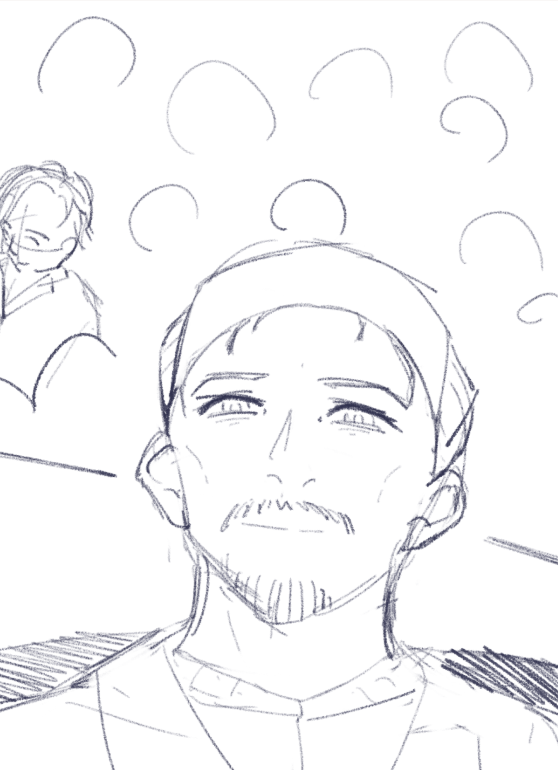
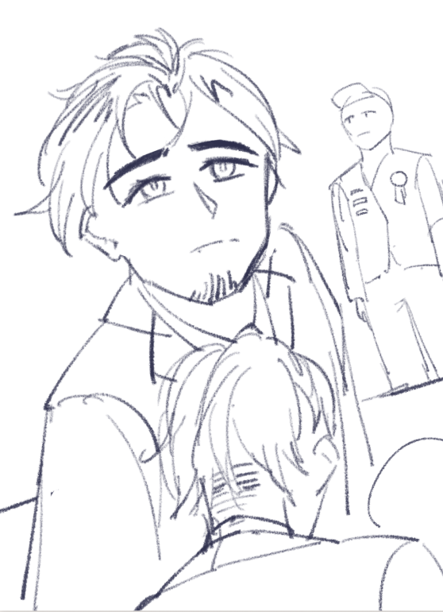

Interactive Narrative — Process Document
Two perspectives
One conflict.
Exploring how proximity, perspective, and medium shape the way people understand conflict — through the parallel stories of a soldier and a civilian.

Kolin
MateoSynopsis
The Story
A border conflict between Mariscal and Quechua escalates into full-scale war after a deadly attack. As the Mariscalian President calls for retaliation, an anti-war protest group fractures when Kolin, a key member, chooses to enlist, believing he must defend his country. Mateo, the group's most passionate pacifist, refuses at first.
Years pass. Mateo grows disillusioned as his protests fail to change anything, eventually choosing a comfortable life abroad, far from the war. Meanwhile, Kolin rises through the military ranks, earning recognition for his success, until a disastrous mission leaves his team dead and him severely injured. Though honored as a hero, Kolin is consumed by guilt and questions the value of his sacrifice.
When the war finally ends, Kolin and Mateo reunite. One is decorated but broken, while the other is successful but burdened with regret. As they confront each other and themselves, they are left wondering whether conviction, survival, or sacrifice truly meant anything at all.
Walkthrough
Video Walkthrough
Poster
Physical Artifact — Civilian Narrative
Poster that establishes the central tension between duty and resistance, setting up the choice that drives the entire experience.
Open ArtifactTV Address
Broadcast — Narrative Branching Point
A televised address experienced simultaneously by both characters, marking the point where the narrative splits into two diverging paths.
Open ArtifactArduino Interaction
Physical Computing — Mateo's Path
A sensor-driven piece capturing ambient tension and environmental disruption through tangible electronic response.
Open ArtifactMateo's Escape
Mixed Media — Mateo's Path
The moment conflict stops being distant and becomes immediate — collapsing the boundary between observer and survivor.
Open ArtifactAR Turn Around
Augmented Reality — Mateo's Path
An augmented reality experience where Mateo physically turns around to discover what has been hidden behind him — the war closing in.
Open ArtifactAR Confrontation
Augmented Overlay — Mateo's Path
Conflict layered onto everyday space — mediated, fragmented, and partially avoidable through augmented reality.
Open ArtifactMedal + Deployment Letter
Physical Artifact — Kolin's Path
Physical artifacts representing the institutional framing of Kolin's experience — a medal of service and the letter that sent him to war.
Open ArtifactVR Experience
Immersive Environment — Kolin's Path
Full immersion into the soldier's perspective, using spatial presence and scale to collapse emotional distance.
Open ArtifactAbout
Team Members
Jiayin
- Digital Platform Development
- Illustration
- Narrative Structure Supervisor
- Video Walkthrough Editor
Louisa
- Poster + Arduino Development
- Project Management
Jesse
- AR Experience Development
- Physical Artifacts Developer
- Narrative Production
Tina
- VR Experience Development
- 3D Model Creation
- Video Walkthrough Actor